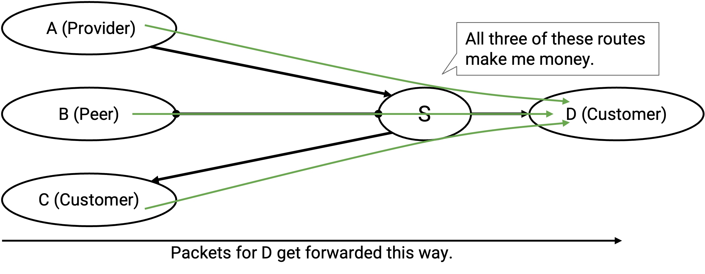
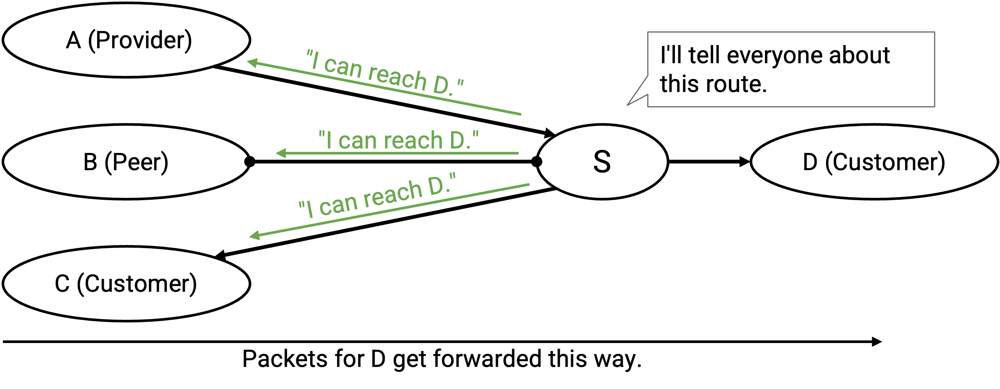
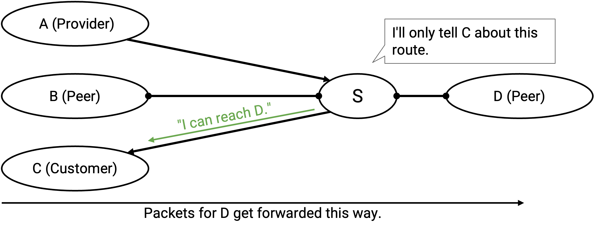
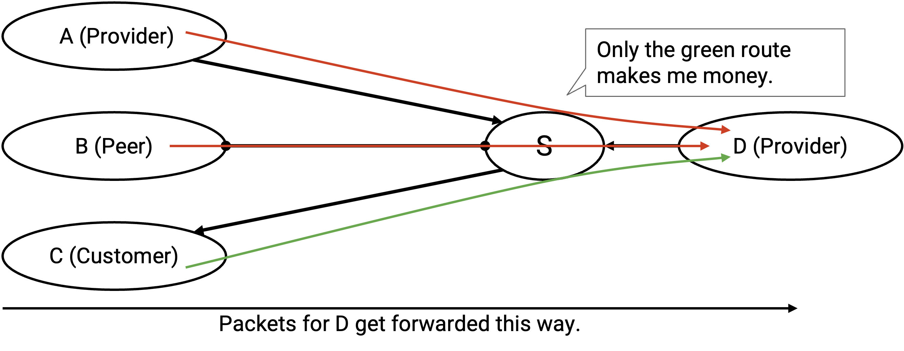
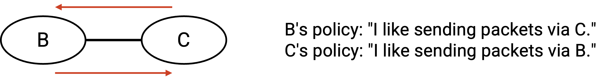

Border Gateway Protocol (BGP)
Brief History of BGP
Least-cost routing protocols are closely related to the shortest-paths problem in graph theory, which has been studied in computer science even before the Internet existed. Dijkstra’s algorithm is from 1956, and the Bellman-Ford algorithm is from 1958. When developing early routing protocols, designers could adapt the ideas from these algorithms.
In the early days, the Internet was a government-funded project, where the network was centrally controlled by the US Department of Defense. The notion of autonomous systems didn’t exist yet, and least-cost algorithms could be scaled up to the small size of the early Internet. Eventually, as the Internet grew, the government transferred control over to different commercial entities, who had to develop inter-domain routing protocols on the fly.
Unlike the early least-cost routing protocols, the notion of autonomous systems each having their own private policies had no precedent in computer science. The ideas behind inter-domain routing protocols had to be developed on the fly in response to the needs of these new Internet companies.
BGP was created in 1989-1995, and its ad-hoc development process means that the protocol isn’t perfect. If we could rewrite the protocol from scratch today, the result might look different. However, the protocol has proven to be effective and resilient, and is still the inter-domain routing protocol in use today. (Remember, everybody has to agree to use the same inter-domain routing protocol, so there is only one.)
BGP is based on Distance-Vector
Recall that we saw two classes of intra-domain routing algorithms: distance-vector algorithms and link-state algorithms. When designing BGP, which class of algorithm would be a better starting point for our design?
Remember that in BGP, we need to respect the privacy of individual ASes. If we used a link-state protocol, then every AS has to tell the entire network about its policies, so that everybody has the full knowledge to compute routes by themselves.
Also, in BGP, we need to respect autonomy and allow each AS to make its own policy decisions. However, a link-state protocol requires everybody to compute routes in some consistent way (e.g. everyone agrees to use least-cost paths).
Link-state algorithm don’t respect the privacy or autonomy of ASes, so link-state would be a poor choice of algorithm to design BGP around. By contrast, distance-vector would allow every individual AS to make its own decisions about what routes to accept/reject, and what routes to announce. Also, because distance-vector is not a global protocol, each AS doesn’t need to know about everyone else’s policies in order to compute valid routes.
Many core ideas in distance-vector protocols will still apply in BGP. The advertisements that we send and receive will still be specific to one destination. Just like in previous sections, we’ll think about advertisements and routes for a single destination, but know that the protocol is being run for multiple destinations simultaneously.
In both distance-vector protocols and BGP, each AS computes routes using only information from the advertisements it receives, without seeing a global picture of the network topology. Also, in both types of protocols, the AS will send and receive advertisements indefinitely, until everybody has converged on a set of routes.
BGP follows the same core idea as distance-vector protocols, but with a slight change in terminology. Instead of saying that each AS announces or advertises routes, we say that the AS is exporting routes. Then, each AS listens to advertisements and selects its preferred route, which we’ll call importing routes.
Distance-vector is a good starting point, but what’s missing?
Distance-vector protocols are designed to find least-cost routes, but in BGP, we want routes to be decided based on each AS’s individual policies.
Policy-Based Importing and Exporting
At a high level, in order to support policies, we will change the rules for importing and exporting routes. Each AS will only export (advertise) routes that the AS likes (according to its policy). Also, when importing (selecting) routes, the AS will select the best route according to policy, not distance.
When an AS receives multiple advertisements for the same destination, instead of picking the shortest route, the AS now selects (imports) a route based on policy.
Remember that advertisements propagate outward from the destination, and messages are forwarded closer to the destination (the opposite direction from advertisements). The import decision dictates where an AS is sending its outbound traffic. For example, if S hears advertisements from A, B, and C about the same destination, S’s import decision (A or B or C) determines where packets for that destination will be forwarded.
In the distance-vector protocol, when I receive an announcement and install a new route, I always announce this new route to all my neighbors.
Now that ASes have their own policies, they can choose whether or not they want to participate in a route. If an AS has a route it potentially dislikes, it can now choose to not export that route to certain neighbors.
For example, suppose my policy is that I don’t want to carry C’s traffic. This could be because of monetary reasons, or it could be some other policy decision by me. When I accept an advertisement and install a route, it’s okay if I don’t advertise that route to C.
Again, remember that data flows in the opposite direction from advertisements. The export decision dictates what inbound traffic an AS is willing to carry. If I export a route, I am agreeing to participate in this route and let other people forward packets to me along this route.
A consequence of this rule is, even if the underlying graph is connected (a path exists between any two nodes), it is not guaranteed that every AS can reach every other AS. In practice, we’ll be able to guarantee reachability by establishing some conventions about the ASes’ policies and the structure of the AS graph.
Implementing Gao-Rexford Rules
In general, BGP supports arbitrary policies, but arbitrary policies don’t give us any guarantees that the Internet is fully connected (packets can go from any source to any destination).
Recall that the Gao-Rexford rules enforce a more restrictive set of policies, based on common money-based import and export policies. Nobody enforces that an AS must follow these rules. However, if ASes agree to follow these rules, we can make stronger assumptions about Internet connectivity.
Brief history: The rules are named for Lixin Gao and Jennifer Rexford at AT&T in the 1990s. Back then, each AS made up their own policies on the fly. Gao and Rexford surveyed ASes about their policies to come up with these rules, and used them to prove guarantees about the Internet.
When importing routes, the Gao-Rexford rules say that the AS prefers to import a route advertised by a customer, over a route advertised by a peer, over a route advertised by a provider.
In practice, ASes also implement additional tiebreaking rules in addition to the Gao-Rexford rules. For example, if I receive advertisements from two customers, I need some additional tiebreaker to prefer one of them. Performance is a common tiebreaker, where we pick routes with higher bandwidth or shorter paths.
Based on the Gao-Rexford rules, how should we export paths? Recall that an AS agrees to participate in a route if at least one neighbor is a customer. Therefore, the AS should only advertise routes if the resulting route, if accepted, has a neighbor on one side.
Let’s go through all the specific cases.
I receive and install a route from a customer. This means that the next hop on this route is that customer. Who should I export this route to? I’ve already guaranteed that there’s a customer on one side paying me, so I can export this route to everybody (customers, providers, and peers).


I receive and install a route from a peer (the next hop is a peer). Who should I export this route to? Nobody is paying me yet, so I should only export this route to customers. If I export this route to a peer or provider who accepts, then I’ve created a route where neither side is paying me.

Similarly, if I receive and install a route from a provider, I should only export this route to customers, because I need at least one side to pay me, and the provider isn’t paying.

The Gao-Rexford rules allow us to provably show that this statement is true: Assuming that the AS graph is hierarchical and acyclic, and all ASes follow the Gao-Rexford rules, then we can guarantee reachability and convergence in steady state.
Breaking down the specific terms in the statement: Reachability means that any two ASes in the graph can communicate. Convergence means that all ASes will eventually stop updating their paths, and the network will reach a steady state with valid paths between any two ASes. “In steady state” means that if the network topology changes, the paths might take some time to change and reach steady state again.
Recall that hierarchical means that starting from any AS, moving up the hierarchy (from customers to providers) will lead to a Tier 1 AS. Acyclic means there is no cycle of customer-provider relationships (directed edges).
The proof of this statement requires that everybody follows the Gao-Rexford rules. If ASes were running their own arbitrary policies, the guarantees would no longer hold.
Modification: BGP Aggregates Destinations
There are two more modifications we need to make to the distance-vector protocol.
In distance-vector protocols, we showed that each destination had a unique address, and the forwarding table mapped each destination to a next hop and distance.
In BGP, each AS is addressed by a prefix, which indicates that all machines inside that AS share the same prefix.
These forwarding tables could get very large (imagine if a provider had hundreds of customers), and every single destination would need to be described in a separate announcement. Is there any way we can express this forwarding table more concisely?
To improve scalability, BGP allows ASes to aggregate multiple destinations into a single forwarding table entry, and announce a more general prefix that includes all of the destinations combined.
Note that in practice, BGP has conventions on the size of the prefixes being announced. For example, ASes will not make an announcement for an individual IP address. 24-bit prefixes (blocks of 256 addresses) are usually the smallest unit of addresses that are announced.
Modification: Path-Vector Protocol
In least-cost protocols such as distance vector, we didn’t have to worry about loops. Every router was trying to find least-cost routes, and by definition, the least-cost route will not contain a loop.
Now that each AS is choosing routes based on its own preferences, we’ve lost the guarantee of no loops. For example, suppose B likes paths through C, and C likes paths through B. We’ve created a routing loop!

To fix this problem, instead of the distance to destination, BGP announcements will include the full AS path to the destination. This changes the protocol from a distance-vector to a path-vector protocol.
For example, in a distance-vector protocol, A would announce: “I can reach the destination with cost 1.” Then, B would announce: “I can reach the destination with cost 2.”
In a path-vector protocol, A would announce: “I can reach the destination with the path [A].” Then, B would announce: “I can reach the destination with the path [B, A].”
With this modification, ASes can determine whether an advertised path contains a loop by tracing through the path in the advertisement. Specifically, if I receive an advertisement, I just need to check if the path includes myself. That would cause the packet to be sent back to me, creating a loop, so I would ignore that advertisement and not accept or advertise the route with the loop.
Note: If everybody agrees to discard routes with loops, this guarantees that advertisements won’t contain loops. The only way that an advertised route would create a loop is if I see a route that already includes myself, and the addition of myself is what creates the loop.
The change from distance-vector to path-vector also allows ASes to implement arbitrary policies. In a distance-vector protocol, I might have a policy like “avoid AS#2063 when possible.” If I receive an advertisement “I can reach the destination with cost 12,” I have no idea if the path being advertised goes through AS#2063. If instead, the advertisement contained the entire path, I can check if the path goes through AS#2063 before deciding to accept or reject it.
Note: The conventional BGP import policy we saw earlier (prefer selecting routes that go to customers, over peers, over providers) only depends on the next hop, not the entire path. Still, the change to path-vector is useful for loop detection, and lets us generalize the protocol to arbitrary policies.
Stub ASes Use Default Routes
Some ASes don’t need to run BGP to determine how to forward packets through the network. In particular, if a stub AS is only connected to a single provider, then every packet bound for other ASes should be sent to that one provider. The stub AS can install a single hard-coded default route for all destinations in other ASes.
What about other ASes trying to send packets to the stub AS? The stub can ask the provider to install a static route, which tells the provider how to send packets to the stub AS. Now, the provider can run BGP and advertise this static route to the rest of the Internet. The stub can ask the provider to hard-code the static route, and the stub never has to run BGP, since the provider is advertising routes to the stub on behalf of the stub.
Most small ASes in the Internet are stub ASes that use default and static routes.
Stub ASes are similar to end hosts in intra-domain routing. They send and receive packets for their own AS, but do not forward packets of their own and do not participate in the routing process. Just like in intra-domain routing, we will usually ignore stub ASes and only consider transit ASes that actually participate in BGP.